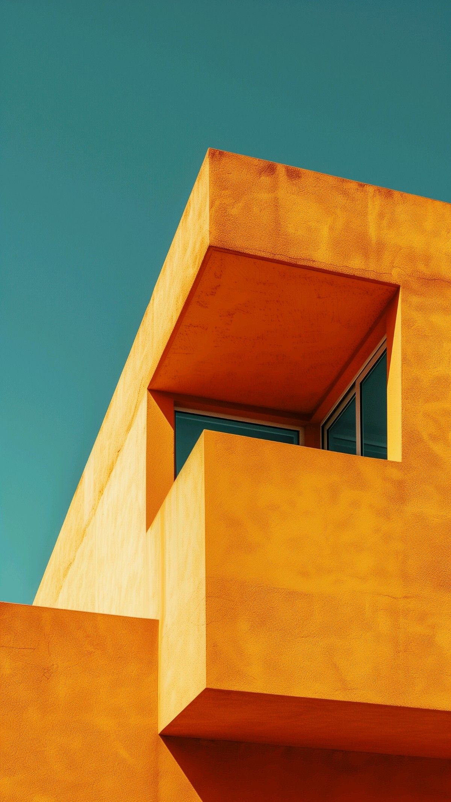
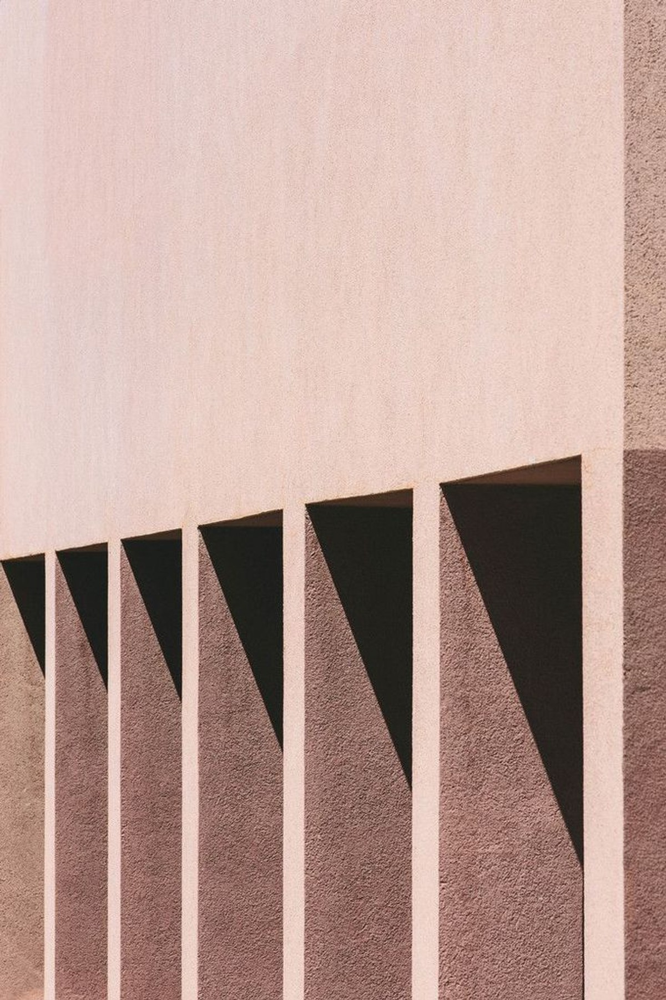
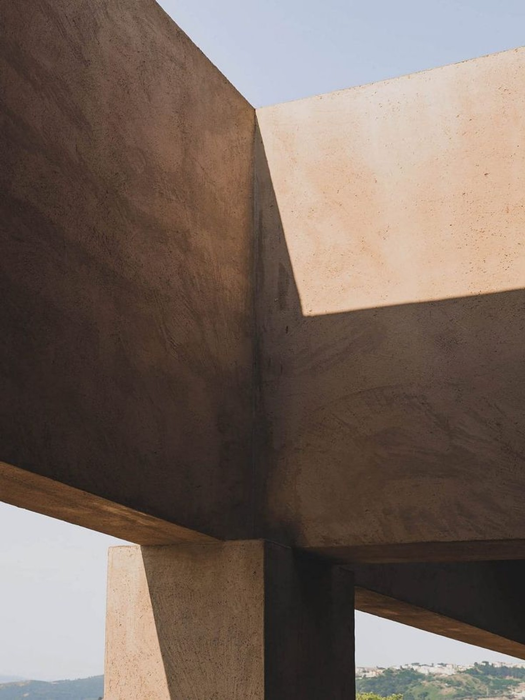
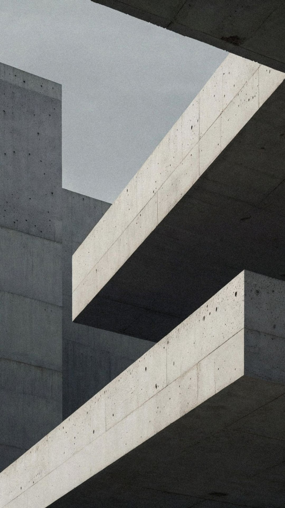

Un buen
cierre se
construye.
Nadie compra una casa por impulso. Se construye la confianza — visita a visita, mensaje a mensaje — hasta el día de la firma. Klo-Ser es el sistema donde ese trabajo toma forma: cada lead con su cimiento, cada seguimiento en su lugar, cada cierre bien edificado. Sin ruido. Sin adornos. Todo cargando exactamente donde debe.

Moodboard Klo-Ser · CosmosColorimetría — materiales de obra
Todos los tonos salen de las fotografías del moodboard: muros al sol, concreto, barro cocido. Fondo hueso, tinta café, y el café profundo como único acento. Nada brilla: todo es materia.
Tipografía — un solo muro
Poppins en toda la marca — geométrica, sólida, sin una sola cursiva. Los titulares se levantan en mayúsculas con peso 600, como muros de carga. El énfasis se marca con color café, nunca con itálicas.
al cliente correcto,
en el momento correcto.
María Fernanda busca casa de 3 recámaras con jardín en Valle Real, presupuesto hasta $6.5M. Visita agendada el miércoles 11:00 — confirmar acceso con vigilancia y llevar la alternativa de Bosques.
La serie «Muro»
Tres piezas con la fotografía real del moodboard: muro, sombra y un claim que carga. La foto arriba, el texto como placa de obra abajo — formato de lámina de arquitectura.

una columna.

se construye.

peldaño a peldaño.
Piezas sociales
Formato 1:1 para el Instagram del equipo: el número del mes, la voz del asesor sobre obra, y el hito de cierre en café sólido.

Gran formato
Fachada de oficina y presentaciones con desarrolladores: la fotografía del moodboard a todo lo ancho, el claim como muro.
El copy de campaña
Una idea madre y tres variaciones — siempre en mayúsculas, siempre rectas.
Y así aterriza en el producto
La misma materia en pantalla: fondo hueso, tinta café, botones café sólido con esquinas rectas. La landing ya está rediseñada con esta colorimetría.
Los KPIs en Poppins 600 con tracking cerrado — cifras que pesan como placas. La urgencia («>24 h sin atender») usa barro quemado #A34E28, reservado solo para eso.